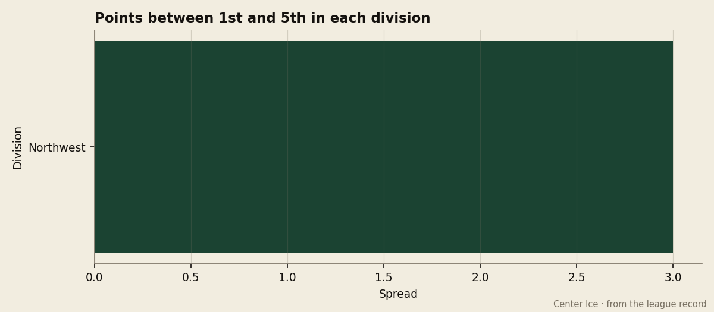
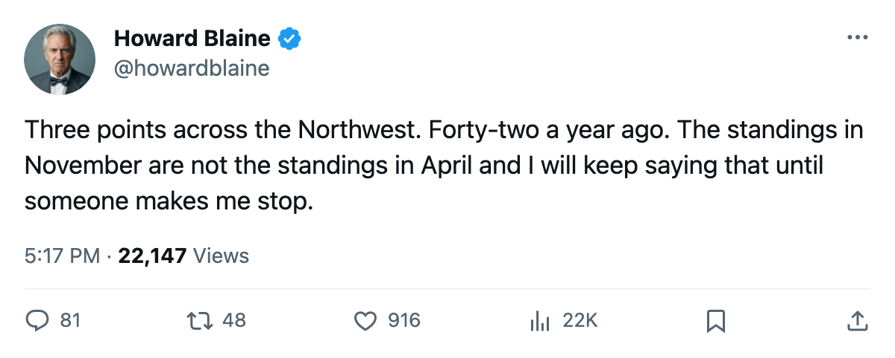
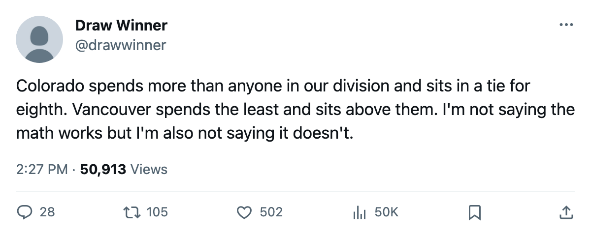

Eight Deep: The Northwest Is 3 Points Across, and Last Spring It Was 42
Five clubs sit within 2 points of the Western Conference's eighth seed. The division that produced the Jack Adams and the league's worst club a year ago is now the tightest race in hockey.
 Howard BlaineSenior writer, The Blaine Rankings · The Hockey Gazette
Howard BlaineSenior writer, The Blaine Rankings · The Hockey Gazette
Three points separate the top of the  Calgary Flames from the bottom of the
Calgary Flames from the bottom of the  Edmonton Oilers in the Northwest Division after 20 games. Calgary sits at 23, Vancouver at 23, Colorado at 22, Minnesota at 22 and Edmonton at 20. The Pacific Division's spread across the same 20-to-22-game sample is 20 points. The Northeast's is 16. The Central's is 15. The Atlantic's is 10. The Southeast's is 9. The Northwest is the only race in hockey where the entire division is one overtime loss deep.
Edmonton Oilers in the Northwest Division after 20 games. Calgary sits at 23, Vancouver at 23, Colorado at 22, Minnesota at 22 and Edmonton at 20. The Pacific Division's spread across the same 20-to-22-game sample is 20 points. The Northeast's is 16. The Central's is 15. The Atlantic's is 10. The Southeast's is 9. The Northwest is the only race in hockey where the entire division is one overtime loss deep.

This is not how the Northwest looked in April.  Colorado Avalanche finished last season with 112 points and the Jack Adams for its coach. Calgary Flames finished with 70. The spread across that division last spring was 42 points. The clubs that were 42 points apart last April are 3 points apart this November, and no one has written it up because the standings at 20 games do not produce the kind of headline a 20-point chasm produces.
Colorado Avalanche finished last season with 112 points and the Jack Adams for its coach. Calgary Flames finished with 70. The spread across that division last spring was 42 points. The clubs that were 42 points apart last April are 3 points apart this November, and no one has written it up because the standings at 20 games do not produce the kind of headline a 20-point chasm produces.
The playoff arithmetic makes the compression matter more than the raw number suggests. In the Western Conference table, Calgary Flames and  Vancouver Canucks are 1 point ahead of the 8th seed. Colorado Avalanche and
Vancouver Canucks are 1 point ahead of the 8th seed. Colorado Avalanche and  Minnesota Wild are tied for 8th at 22. Edmonton Oilers is 2 points behind. No other division puts five clubs that close to the bubble. The Pacific puts
Minnesota Wild are tied for 8th at 22. Edmonton Oilers is 2 points behind. No other division puts five clubs that close to the bubble. The Pacific puts  Dallas Stars 11 points clear of 8th and
Dallas Stars 11 points clear of 8th and  Phoenix Coyotes 9 points back of it, a 20-point corridor where four of the five clubs are either safe or doomed by the time December arrives.
Phoenix Coyotes 9 points back of it, a 20-point corridor where four of the five clubs are either safe or doomed by the time December arrives.
The intra-division series tell a story the raw standings flatten. Edmonton Oilers has played 3 division games and gone 2 and 0 and 1 in overtime, outscoring opponents 11 to 6. It has 17 division games left, the most in the division, and it has already beaten Calgary Flames and Minnesota Wild in regulation. Vancouver Canucks is 3 and 0 and 1 with 1 overtime win in 5 division games, 18 goals for against 14. Minnesota Wild is 0 and 3 with 2 overtime losses, 12 for and 18 against, the worst record inside the division and the only club in the Northwest that has not won one in regulation.
The money is inverted against the standings. Vancouver Canucks carries the league's lowest payroll at $46.36M and sits 1 point ahead of the 8th seed. Colorado Avalanche carries $66.24M, the fourth-highest in the league, and is tied for 8th. Edmonton Oilers at $42.61M is 2 points back. Vancouver's per-point cost is $2.02M and Colorado's is $3.01M, between clubs that are 1 point apart in the standings.
The scoring is distributed across all five clubs rather than concentrated in one.  Markus Naslund87 leads the league at 32 points, 17 goals and 15 assists in 20 games, a 131-point pace that puts the Hart in play for a third consecutive year.
Markus Naslund87 leads the league at 32 points, 17 goals and 15 assists in 20 games, a 131-point pace that puts the Hart in play for a third consecutive year.  Todd Bertuzzi89 sits 2nd overall at 28 points and has a 93 overall in the Book, the highest grade of any Northwest player.
Todd Bertuzzi89 sits 2nd overall at 28 points and has a 93 overall in the Book, the highest grade of any Northwest player.  Jarome Iginla92 has 27 points in 20 games for Calgary, and
Jarome Iginla92 has 27 points in 20 games for Calgary, and  Peter Forsberg89 and
Peter Forsberg89 and  Paul Kariya83 each have 26 for Colorado.
Paul Kariya83 each have 26 for Colorado.  Richard Park77 has 27 points for Minnesota on a 77 overall, the sort of line the Book flags as above the player. Six players sit inside the league's top 12 in scoring from a single division, and none of their clubs is more than 3 points from another's.
Richard Park77 has 27 points for Minnesota on a 77 overall, the sort of line the Book flags as above the player. Six players sit inside the league's top 12 in scoring from a single division, and none of their clubs is more than 3 points from another's.
In goal, the division is balanced by GAA.  Manny Fernandez88 has a 2.13 and a 90 overall for Minnesota, the best of the five and good enough to make the Vezina conversation even on a club tied for 8th.
Manny Fernandez88 has a 2.13 and a 90 overall for Minnesota, the best of the five and good enough to make the Vezina conversation even on a club tied for 8th.  Dan Cloutier84 is at 2.40 with an 88 overall for Vancouver.
Dan Cloutier84 is at 2.40 with an 88 overall for Vancouver.  Roman Turek84 at 2.71 and an 80 for Calgary is the only one whose numbers sit clearly below the division's standard.
Roman Turek84 at 2.71 and an 80 for Calgary is the only one whose numbers sit clearly below the division's standard.  Tommy Salo86 has a 2.44 and an 84 for Edmonton.
Tommy Salo86 has a 2.44 and an 84 for Edmonton.  Jamie Storr77 is at 2.52 with an 83 for Colorado.
Jamie Storr77 is at 2.52 with an 83 for Colorado.
The week settles nothing and complicates everything
Four intra-division games fall this week: Vancouver at Minnesota on November 25, Colorado at Minnesota on November 29, and Colorado at Edmonton on November 30. The first is a rematch of the season opener, which Vancouver won 3 to 2. Minnesota sits 0 and 3 and 2 in overtime inside the division and has a game in hand on every other club in it, having played 21 games to the others' 20. A Minnesota win on November 25 would pull the Wild 2 points clear of Vancouver and 4 ahead of Edmonton, which would be the widest the spread has looked all season.
A Colorado sweep of its two division games this week, at Minnesota on the 29th and at Edmonton on the 30th, would pull the Avalanche to 26 and 6 points clear of Edmonton, which would break the 3-point line for the first time since the season opened. Colorado has played 6 division games with 14 left and holds the only series record in the division that splits even: 2 and 1 with 1 overtime win and 2 overtime losses, 17 goals for and 17 against.
The standings at Christmas will not be the standings in April, and this desk says that plainly every time it writes it. The Northwest after 20 games is a division in which the last-place club has played 3 fewer division games than everyone else, where the league's 3rd-highest payroll is tied for 8th and its lowest is 7th, and where one overtime loss in a single week could widen the spread by 2 points and make the tightest race in hockey into something ordinary. The spread is 3.

